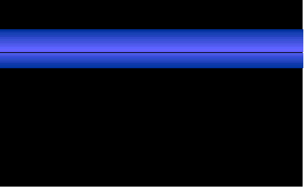

In the Technion, we hold a Linux instalattion party twice a year. The first one
in which I took an active part was that of Winter 97/98. One of the things I
wanted to do in prepartion for it was to prepare a slogan, as well as a
graphical banner representing it.
One day my father, my sister and I were driving in our car, when I told him
that I seek such a slogan that will tell people how Linux is free and that a
lot of the software for it is also free. Eventually my father suggested
"Linux: Free software - Free aggregations.". I said that it had the right
direction but lacked the final touch. After some thought, I came up with
"Linux - Because software problems should not cost money".
Thus, I set out to prepare the banner. First the "Linux" part. I used the
Long Island font, which was present on our hard-disk at the time. It isn't
bundled with Corel-Draw 4.0 so I don't know how we got it. Maybe out of
Print Shop. In any case, that's not too critical as any heavyweight serif
font will do.
The "i" was singularily converted to the font "Bodoni Bd BT", which AFAIR is
shipped with Corel-Draw. The reason for it was to resemble the "i" of Intel,
which is a common practice in drawing a Linux logo. A nice feature of
Corel-Draw is that one can use the "manipulate" toolbar tool to change the
properties or location of individual letters in a text.
The finalized Linux was filled with a Corel-Draw texture. The texture is sky
3 colors with the colors of Light green as sky, light pale purple as
atmosphere and white as clouds. The texture number is 4 and the softness
is 50%.
In order to fill the slogan, I first created a pattern. A pattern is a
Corel-Draw image that can be used to fill another image. The pattern I
prepared had a black background, with one horizontal strip filled with
a horizontal blue gradient. At first I considered green, but my father
said it should be blue and I think he was right.

After the pattern was created, I created the two lines of the slogan. Each
line was a separate object, so the pattern would be aligned in the same place
of the letters. The font is called "Denmark", and it too does not come with
Corel-Draw 4.0. I did not Italicize it - the font comes slanted. I had to tweak
with the paramters of the pattern fill a little, so it will come out in just
the right place. After it was properly applied to the upper line, I applied it
to the bottom line in the same way using the "Copy Attributes" function.
Afterwards, I added the background, which is a plain fill coloured
Olive Yellow-Green. By the way, my father thought that adding a background was
a bad idea, and that I should keep it white. But my sister and I didn't think
so.
I even prepared a T-shirt with the banner. The Ironic thing was that even
though the banner is about Linux, it was prepared entirely in Windows 95'. Oh
well, Corel-DRAW was not available for Linux at that point in time...
For sources, and different arrangements of this banner, go to its homepage
here.
Back to Shlomi Fish' Art